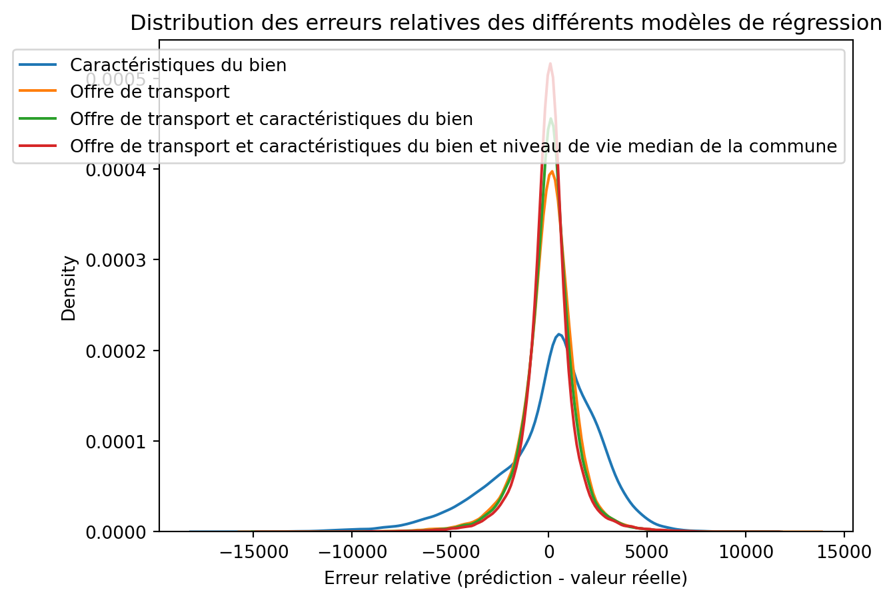

# ouverture du GeoDataFrame final
import geopandas as gpd
import pandas as pd
import os
if os.getcwd().endswith("notebooks"):
os.chdir('..')
# Load a sample geospatial dataset
gdf = gpd.read_file("cache/results/logements_transport_final.geojson")
# Display the first few rows of the GeoDataFrame
# ensure every column is shown
pd.set_option('display.max_columns', None)
gdf = gdf.drop(columns=["adresse", "Commune", "Code commune",
"nearest_bus_stop_id", "nearest_metro_stop_id",
"nearest_train_stop_id", "nearest_tramway_stop_id"])
save_gdf = gdf.copy()
gdf = save_gdf.copy()
# 3 dataframes pour Paris, Petite Couronne, Grande Couronne
paris = gdf[gdf["Department"] == "75"].drop(columns=["Department"])
pc = gdf[gdf["Department"].isin(["92", "93", "94"])].drop(columns=["Department"])
gc = gdf[gdf["Department"].isin(["77", "78", "91", "95"])].drop(columns=["Department"])Machine Learning pour la prédiction du prix des logements
Nous avons choisi de mettre en place un modèle de Machine Learning pour prédire le prix des logements en fonction des différents regresseurs à disposition.
Un tel modèle peut avoir de nombreux usages :
- Automatiser l’analyse de grandes quantités de données : un agent immobilier ou un analyste peut traiter des milliers de biens et de caractéristiques sans calcul manuel fastidieux.
- Identifier les facteurs importants : le modèle peut montrer quels éléments (surface, nombre de pièces, proximité des transports, revenu médian de la commune…) influencent le plus le prix.
- Prédictions plus fines que la moyenne par quartier : contrairement à une simple estimation moyenne, le modèle prend en compte les caractéristiques spécifiques du logement et de son environnement.
- Autres applications concrètes :
- Donner une fourchette de prix indicative pour un bien.
- Comparer rapidement les quartiers ou types de logement.
- Aider à détecter les biens surévalués ou sous-évalués.
Pour ce projet, nous utilisons Random Forest, un algorithme non paramétrique robuste qui combine plusieurs arbres de décision pour améliorer la précision des prédictions tout en limitant le risque de surapprentissage.
Entrainement
Ouverture des fichiers
Préparation du pipeline
# Préparation de la fonction de modélisation Random Forest
from sklearn.model_selection import train_test_split
from sklearn.pipeline import Pipeline
from sklearn.impute import SimpleImputer
from sklearn.preprocessing import StandardScaler, OneHotEncoder
from sklearn.compose import ColumnTransformer
from sklearn.ensemble import RandomForestRegressor, RandomForestClassifier
import numpy as np
import pandas as pd
from sklearn.metrics import mean_squared_error, accuracy_score
def RF_model(gdf, categorical_cols, numeric_cols, target_col="Valeur foncière au mètre carré", random_state = 42, test_size=0.2, use_classifier=False):
# filtrage des colonnes utiles
df = gdf.copy()
# retirer lignes sans target
df = df[~df[target_col].isna()].reset_index(drop=True)
features = categorical_cols + numeric_cols
# pipeline de preprocessing
numeric_transformer = Pipeline([
("imputer", SimpleImputer(strategy="median")),
("scaler", StandardScaler()),
])
categorical_transformer = Pipeline([
("imputer", SimpleImputer(strategy="constant", fill_value="missing")),
("onehot", OneHotEncoder(handle_unknown="ignore")),
])
preprocessor = ColumnTransformer([
("num", numeric_transformer, numeric_cols),
("cat", categorical_transformer, categorical_cols),
], remainder="drop")
model = RandomForestRegressor(random_state=random_state, n_estimators=150, max_depth=15, min_samples_split=5, n_jobs=1)
if use_classifier:
model = RandomForestClassifier(random_state=random_state, n_estimators=150, max_depth=15, min_samples_split=5, n_jobs=1)
# pipeline complet avec Lasso alpha permet de faire de la sélection de variables
pipe = Pipeline([
("preproc", preprocessor),
("model", model),
])
# train/test split
X = df[features]
y = df[target_col].values
X_train, X_test, y_train, y_test = train_test_split(X, y, test_size=test_size, random_state=random_state)
# entraînement
pipe.fit(X_train, y_train)
# évaluation
train_score = pipe.score(X_train, y_train)
test_score = pipe.score(X_test, y_test)
print(f"R² train: {train_score:.4f}")
print(f"R² test: {test_score:.4f}")
y_train_pred = pipe.predict(X_train)
y_test_pred = pipe.predict(X_test)
result = {"R²_train": train_score, "R²_test": test_score}
if not use_classifier:
result["MSE_train"] = mean_squared_error(y_train, y_train_pred)
result["MSE_test"] = mean_squared_error(y_test, y_test_pred)
# print(f"MSE train: {result["MSE_train"] :.4f}")
# print(f"MSE test: {result["MSE_test"] :.4f}")
else:
result["Accuracy_train"] = accuracy_score(y_train, y_train_pred)
result["Accuracy_test"] = accuracy_score(y_test, y_test_pred)
# print(f"Accuracy train: {result["Accuracy_train"] :.4f}")
# print(f"Accuracy test: {result["Accuracy_test"] :.4f}")
y_pred = pipe.predict(X)
return y_pred, result
Entrainement
# Entraînement des modèles et calcul des erreurs relatives
import numpy as np
import pandas as pd
from sklearn.metrics import mean_squared_error, mean_absolute_error
# Définition des colonnes
categorical_cols = [
"Type local",
]
numeric_cols = [
"Surface reelle bati",
"Surface terrain",
"Nombre pieces principales",
]
numeric_cols_transport = [
"nearest_bus_dist_m",
"nearest_metro_dist_m",
"nearest_tramway_dist_m",
"nearest_train_dist_m",
"nb_routes_tramway_1km",
"nb_routes_metro_1km",
"nb_routes_train_1km",
"nb_routes_bus_1km",
"nb_stations_tramway_1km",
"nb_stations_metro_1km",
"nb_stations_train_1km",
"nb_stations_bus_1km",
"passage_journalier_tramway_1km",
"passage_journalier_metro_1km",
"passage_journalier_train_1km",
"passage_journalier_bus_1km",
]
revenu = ["RDB_M"]
# Liste pour stocker les résultats
list_of_results = []
model_metadata = [
{
"short_name": "prix_on_logement",
"long_name": "Caractéristiques du bien",
"cat": categorical_cols,
"num": numeric_cols,
"target": "Valeur foncière au mètre carré",
"type": "regression",
},
{
"short_name": "prix_on_transport",
"long_name": "Offre de transport",
"cat": [],
"num": numeric_cols_transport,
"target": "Valeur foncière au mètre carré",
"type": "regression",
},
{
"short_name": "prix_on_logement_transport",
"long_name": "Offre de transport et caractéristiques du bien",
"cat": categorical_cols,
"num": numeric_cols + numeric_cols_transport,
"target": "Valeur foncière au mètre carré",
"type": "regression",
},
{
"short_name": "prix_on_logement_transport_revenu",
"long_name": "Offre de transport et caractéristiques du bien et niveau de vie median de la commune",
"cat": categorical_cols,
"num": numeric_cols + numeric_cols_transport + revenu,
"target": "Valeur foncière au mètre carré",
"type": "regression",
}
]
# Boucle pour entraîner les modèles et calculer l'erreur relative
for metadata in model_metadata:
print(metadata["long_name"])
use_classifier = metadata["type"] == "classification"
y_pred, result = RF_model(
gdf,
metadata["cat"],
metadata["num"],
target_col=metadata["target"],
random_state=42,
test_size=0.2,
use_classifier=use_classifier
)
gdf["relative_error_" + metadata["short_name"]] = y_pred.astype(float) - gdf[metadata["target"]].astype(float)
list_of_results.append({"model": metadata["long_name"], **result})
# Calcul des erreurs absolues
for col in gdf.keys():
if col.startswith("relative_error_"):
gdf["absolute_" + col[9:]] = gdf[col].abs()
# Table de R²
r2_table = pd.DataFrame(list_of_results)
r2_table = r2_table[["model", "R²_train", "R²_test"]].rename(columns={"model": "Regresseurs"})
metrics_list = []
for metadata in model_metadata:
model_name = metadata["long_name"]
y_true = gdf[metadata["target"]].astype(float)
y_pred = gdf["relative_error_" + metadata["short_name"]] + y_true # reconstruire les prédictions
mse = mean_squared_error(y_true, y_pred)
rmse = np.sqrt(mse)
mae = mean_absolute_error(y_true, y_pred)
rmspe = np.sqrt(np.mean(((y_true - y_pred) / y_true) ** 2)) * 100 # en %
metrics_list.append({
"Modèle": model_name,
"MSE": mse,
"RMSE": rmse,
"MAE": mae,
"RMSPE (%)": rmspe
})
# Création du DataFrame final pour les métriques
metrics_df = pd.DataFrame(metrics_list)
metrics_df = metrics_df[["Modèle", "MSE", "RMSE", "MAE", "RMSPE (%)"]]
# Affichage formaté
metrics_df.style.format({
"MSE": "{:,.0f}",
"RMSE": "{:,.0f}",
"MAE": "{:,.0f}",
"RMSPE (%)": "{:.2f}"
})Caractéristiques du bien
R² train: 0.3377
R² test: 0.2547
Offre de transport
R² train: 0.8212
R² test: 0.6959
Offre de transport et caractéristiques du bien
R² train: 0.8487
R² test: 0.7191
Offre de transport et caractéristiques du bien et niveau de vie median de la commune
R² train: 0.8669
R² test: 0.7510| Modèle | MSE | RMSE | MAE | RMSPE (%) | |
|---|---|---|---|---|---|
| 0 | Caractéristiques du bien | 7,209,114 | 2,685 | 2,002 | 72.51 |
| 1 | Offre de transport | 2,168,553 | 1,473 | 1,013 | 41.73 |
| 2 | Offre de transport et caractéristiques du bien | 1,885,963 | 1,373 | 935 | 38.67 |
| 3 | Offre de transport et caractéristiques du bien et niveau de vie median de la commune | 1,662,901 | 1,290 | 850 | 35.64 |
Les performances de quatre modèles ont été évaluées en utilisant le coefficient de détermination (R²) et différentes mesures d’erreur (MSE, RMSE, MAE, RMSPE).
- Le modèle basé uniquement sur les caractéristiques du bien explique seulement 25 % de la variance des prix, ce qui est faible.
- L’ajout de l’offre de transport améliore significativement la performance (R² test ~0.69), ce qui montre que l’accessibilité est un facteur clé des prix immobiliers.
- Le modèle complet, intégrant caractéristiques du bien, offre de transport et revenu médian, atteint un R² test de 0.748, indiquant qu’il explique environ 75 % de la variance.
- La différence modérée entre R² train et R² test indique que le modèle généralise correctement sans surapprentissage important.
Distribution des erreurs relatives
# affichage la distribution des erreurs absolues avec seaborn
import seaborn as sns
ax = sns.kdeplot(gdf["relative_error_prix_on_logement"], fill=False, label="Caractéristiques du bien")
sns.kdeplot(gdf["relative_error_prix_on_transport"], fill=False, label="Offre de transport", ax=ax)
sns.kdeplot(gdf["relative_error_prix_on_logement_transport"], fill=False, label="Offre de transport et caractéristiques du bien", ax=ax)
sns.kdeplot(gdf["relative_error_prix_on_logement_transport_revenu"], fill=False, label="Offre de transport et caractéristiques du bien et niveau de vie median de la commune", ax=ax)
ax.set_xlabel("Erreur relative (prédiction - valeur réelle)")
ax.set_title("Distribution des erreurs relatives des différents modèles de régression")
ax.legend()
- Les erreurs diminuent de manière significative à mesure que l’on enrichit le modèle, comme l’illustre la baisse continue du MAE. Celui-ci passe de 2 003 pour le modèle basé uniquement sur les caractéristiques du bien à 849 pour le modèle complet. Cela signifie qu’en moyenne, l’erreur absolue de prédiction est divisée par plus de deux lorsque l’on intègre l’offre de transport et le revenu médian de la commune.
- Pour le modèle le plus complet, un MAE de 849 indique qu’un bien dont le prix réel est par exemple de 5 000 (dans l’unité de mesure utilisée) est prédit en moyenne avec une erreur d’environ ±850. De même, pour un bien valorisé à 10 000, l’erreur moyenne reste du même ordre de grandeur absolu, ce qui peut représenter une incertitude significative en valeur relative.
- Bien que le modèle complet réduise l’erreur relative (RMSPE) à environ 36 %, ce niveau de précision est adapté à des analyses de tendances globales ou à des comparaisons entre zones géographiques, mais reste insuffisant pour des prédictions précises à l’échelle d’un bien immobilier individuel, notamment dans un contexte d’aide à la décision pour la fixation d’un prix de vente.
Visualisation
Lorsqu’on n’utilise que les caractéristiques du logment (Surface, taille du terrain, nombre de pièces) le modèle sous-estime le prix des logements du centre de paris et sur-estime ceux des banlieux.
from script.leaflet_tools import creation_heatmap, display_heatmap
import numpy as np
from branca.colormap import LinearColormap
def heatmap_relative_error(gdf, target_col):
grid = creation_heatmap(
gdf,
cell_size=1000,
target_value_col=target_col,
min_points_per_cell=5
)
max_abs = np.max(np.abs(grid["moyenne"]))
vmin, vmax = -max_abs, max_abs
cmap = LinearColormap(
colors= ["darkblue", "blue", "#d9d9d9", "red", "darkred"],
vmin=vmin,
vmax=vmax,
caption="Erreur relative moyenne"
)
m = display_heatmap(
grid,
target_value_col="moyenne",
cmap=cmap,
default_cmap_caption="",
legend=["Erreur relative", "Nombre de points"]
)
print("Heatmap de l'erreur relative moyenne, rouge = sur-estimation, bleu = sous-estimation")
return m
from pathlib import Path
assets = Path("assets/maps")
assets.mkdir(parents=True, exist_ok=True)
heatmap_relative_error(gdf, target_col="relative_error_prix_on_logement").save(assets / "ml1.html")Heatmap de l'erreur relative moyenne, rouge = sur-estimation, bleu = sous-estimation
Lorsqu’on ajoute l’offre de transport (avec ou sans les caractéristiques du logement) le modèle sous-estime le prix des logements à l’Ouest de Paris et surestime ceux à l’est.
On remarque en particulier la Seine-Saint-Denis qui est un département bien desservi, mais peu cher. Pour faire de meilleures predictions, il est donc nécessaire d’ajouter des données supplémentaires expliquant ce genre de phénomènes.
heatmap_relative_error(gdf, target_col="relative_error_prix_on_transport").save(assets / "ml2.html")Heatmap de l'erreur relative moyenne, rouge = sur-estimation, bleu = sous-estimationheatmap_relative_error(gdf, target_col="relative_error_prix_on_logement_transport").save(assets / "ml3.html")Heatmap de l'erreur relative moyenne, rouge = sur-estimation, bleu = sous-estimationheatmap_relative_error(gdf, target_col="relative_error_prix_on_logement_transport_revenu").save(assets / "ml4.html")Heatmap de l'erreur relative moyenne, rouge = sur-estimation, bleu = sous-estimationL’ajout du revenu médian par commune comme variable explicative permet de mieux capturer les différences socio-économiques entre les zones et améliore les prévisions. En conséquence, la tendance à surestimer systématiquement les prix dans l’est ou à les sous-estimer dans l’ouest, observée avec les modèles précédents, disparaît. Les prédictions deviennent ainsi plus équilibrées et moins biaisées géographiquement, reflétant mieux la réalité du marché immobilier au-delà d’un simple effet Est-Ouest.
Conclusion
Le modèle le plus complet permet d’expliquer 75 % de la variance des prix immobiliers et réduit l’erreur relative à 36 %. De plus, il permets d’éviter les biais géographique. Il est donc utilisable pour des analyses macro ou des tendances, mais reste insuffisant pour prédire précisément le prix d’un bien individuel.
L’ajout de nouvelles variables et l’utilisation de modèles plus flexibles pourraient encore améliorer la précision. Par exemple :
- la proximité des écoles, commerces, espaces verts,
- l’âge et la qualité du logement
- le dynamisme de la zone (démographique, économique, …)